इस प्राकृतिक उत्पाद के लिए धन्यवाद, मैं अपना जीवन बदलने में सक्षम था
इस प्राकृतिक उत्पाद के लिए धन्यवाद, मैं अपना जीवन बदलने में सक्षम था
बुध, को प्रकाशित, अब कोई भी 60 वर्षीय व्यक्ति से स्वास्थ्य सलाह नहीं चाहता है जो अधिक वजन वाला है और पुरानी उच्च रक्तचाप के साथ-साथ उच्च रक्त शर्करा के स्तर से पीड़ित है। हालांकि, आपको यह जानकर आश्चर्य हो सकता है कि पिछले कुछ महीनों में सिर्फ एक गोली लेने से मैंने स्वास्थ्य के मोर्चे पर कितनी प्रगति की है। लेकिन मैं खुद से आगे निकल रहा हूं। लेने से पहले मेरी स्वास्थ्य स्थिति के बारे में बताना और समझाना महत्वपूर्ण है।
नियंत्रण से बाहर हो रहा है
सबसे पहले, मेरे बारे में थोड़ा सा, मेरा नाम जोस रामोस है, और मैं एक 67 वर्षीय सेवानिवृत्त सेना अधिकारी हूं। नियमित व्यायाम और अच्छे आहार के कारण मैं अपने युवावस्था में बहुत फिट था। लेकिन जैसे-जैसे मेरे शरीर में उम्र के लक्षण दिखने लगे, मैं दैनिक कसरत कार्यक्रम को बनाए रखने की कठोर दिनचर्या के साथ नहीं रह सका। अनुवांशिक कारणों से मुझे 39 साल की उम्र में काफी पहले ही टाइप 2 मधुमेह हो गया था।
इन सभी कारकों, साथ ही कार्ब्स और मिठाइयों को बंद करने में मेरी अक्षमता के परिणामस्वरूप तेजी से वजन बढ़ा। मैं एक 5 '9 "लंबा आदमी था, जिसका वजन 110 किलो था, जिसका अर्थ है कि मैं मोटापे से ग्रस्त था, लगातार बीमार था, और गहराई से उदास था। एक भी दिन ऐसा नहीं था जब मेरे रक्त शर्करा का स्तर उच्च स्तर पर नहीं था, और मेरा उच्च रक्तचाप भी खराब हो गया था।
टिक-टिक टाइम बम
दर्द और ER के नियमित दौरे ने ही मेरे विश्वास को पुख्ता किया कि मेरा समय आ गया था। अवसाद ने मेरे लिए इसे और भी कठिन बना दिया क्योंकि इसने मुझे शाम को पार्क में घूमने जैसे सबसे बुनियादी कार्यों को करने से भी रोक दिया। मैंने ईमानदारी से सोचा था कि मेरे वजन के मुद्दों और संबंधित स्वास्थ्य जटिलताओं का कोई अंत नहीं होगा जो वे अपने साथ लाए थे।
इसी मनःस्थिति के दौरान मैंने एक मधुमेह पूरक का विज्ञापन देखा जिसमें वजन कम करने और रक्तचाप और रक्त शर्करा के स्तर को प्रबंधित करने में सहायता करने का वादा किया गया था। और भी, पूरक ने चुनिंदा अवयवों के साथ सभी प्राकृतिक होने का दावा किया, जिन्होंने परिणाम साबित किए थे। बड़े-बड़े दावे, लेकिन मैं किसी भी चीज के लिए तैयार था। और इस तरह के साथ मेरा प्रेम संबंध शुरू होता है मुझे मेरी चांदी की गोली मिल गई थी, मेरी सवारी या मर जाओ। अब मैं अपने अच्छे स्वास्थ्य की यात्रा में मेरी मदद करने के लिए नियमित रूप से लेता हूं और मैंने अंतर महसूस किया है।
परिणाम खुद अपनी कहानी कहते हैं
को नियमित रूप से शुरू करने के बाद से, पिछले मार्च से, मैंने कुछ किलो वजन कम किया है। निश्चित रूप से इसमें कुछ महीने लगे, लेकिन मैं बिल्कुल युवा नहीं हूं, और मेरा मेटाबॉलिज्म उसेन बोल्ट जैसा नहीं है। शुरुआती वज़न में कमी ने मुझे अपने खाने की आदतों में सुधार करने के लिए प्रोत्साहित किया, और परिणाम खुद के लिए बोलते हैं।
अब मेरे पास अच्छी तरह से विनियमित रक्तचाप और रक्त शर्करा का स्तर है। मेरा नियमित चेक-अप भी इंगित करता है कि मेरे HDL से LDL अनुपात में काफी सुधार हुआ है। इसलिए, खराब कोलेस्ट्रॉल का स्तर कम होता है और अच्छे कोलेस्ट्रॉल का स्तर अधिक होता है। इन सभी कारकों के परिणामस्वरूप, मेरे हृदय की कार्यप्रणाली में भी सुधार हुआ है, और आजकल मुझे शायद ही कभी सांस फूलती है, जिसे मैं पहले थोड़ी दूर चलने के बाद भी अनुभव करता था।
आजकल, मेरे जीवन की गुणवत्ता में जबरदस्त सुधार हुआ है। के नियमित उपयोग ने न केवल मेरे स्वास्थ्य में मदद की, बल्कि मुझे नियंत्रण लेने और सकारात्मक बदलाव करने के लिए प्रोत्साहित किया ताकि मैं बेहतर हो सकूं और अपने जीवन का पूरा आनंद ले सकूं। मैं सभी को की सिफारिश करता हूं क्योंकि यह एक उत्कृष्ट पोषण पूरक है जो वास्तव में उन सभी दावों को पूरा करता है जो यह करता है और, मेरी राय में, कुछ क्षमता में उनसे आगे निकल जाता है।
ध्यान दें